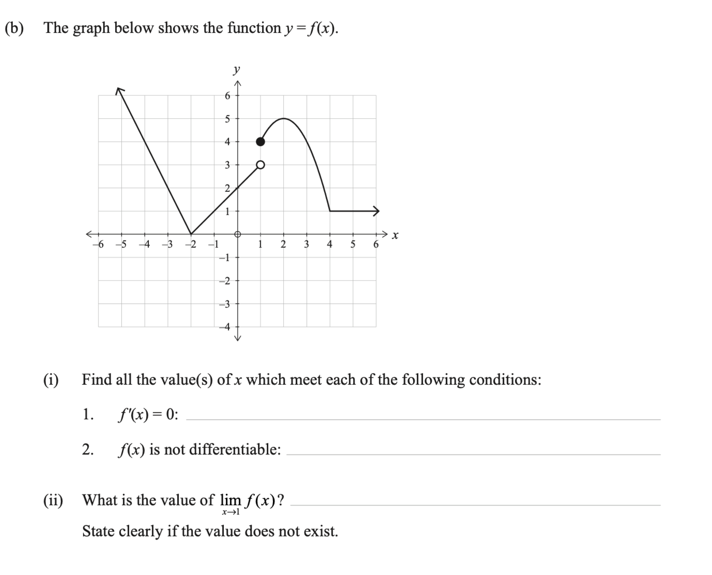

Level 3 Differentiation Walkthrough
2019 Differentiation · Q3(b)
2019 Paper
Question
The graph shows \(y=f(x)\).
(i) Find all values of \(x\) for which: 1. \(f^\prime(x)=0\); 2. \(f(x)\) is not differentiable.
(ii) What is \(\lim_{x\to1}f(x)\)? State clearly if the value does not exist.
Graph description
Graph description: a straight ray descends through (−5,6) to (−2,0); a straight segment rises to an open circle at (1,3). A separate curve begins at a filled point (1,4), rises smoothly to (2,5), then falls to (4,1). From (4,1) a horizontal ray continues to the right. The joins at (−2,0) and (4,1) are corners.
Original question scan

First walkthrough idea
Focus to try first
Read stationary points, non-differentiability, and a two-sided limit from a graph.
Step 1
Find where f prime is zero
Look for horizontal tangents and horizontal pieces of the graph.
Show the first step’s working
Walkthrough overview
What this question practises
This 2019 walkthrough is part of AS91578 — Apply differentiation methods in solving problems.
Method: Reading derivative conditions and limits from a graph.
This is Question 3(b) from the 2019 NCEA Level 3 Differentiation paper for AS91578 — Apply differentiation methods in solving problems. Use the guided hints to practise the method before revealing the full working.
Calc.nz is an independent learning resource. Compare questions, diagrams, and assessment information with the official NZQA resources for AS91578.
Page updated .
Learning summary
Review the method, not only the answer
This walkthrough helps you practise reading derivative conditions and limits from a graph. Use the hints to plan the method, then repeat the question without hints and check each step.
Check
Distinguish the plotted function value from its limit and gradient. Open circles, jumps and corners affect these questions in different ways.
Calculus essentials: algebra, logarithms, rules, radians and domains
Continue practising
Try a related question: 2024 Differentiation · Q3(b). Attempt it before opening working, then return to this question later.
- All 2019 Differentiation walkthroughs
- All AS91578 Differentiation years
- Practise more questions using this skill: Graphs, signs and limits